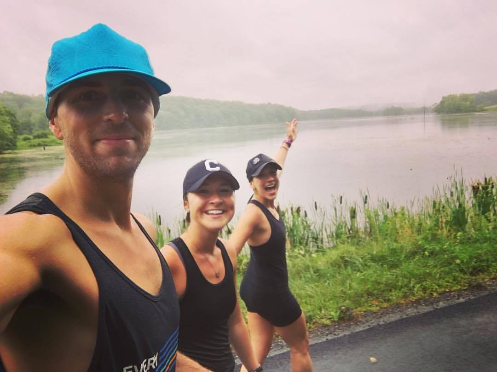

Emily Koehler
Biomedical Engineering, Class of 2017
Emily
"Never Stop Running and Never Stop Moving Forward!"
“This summer was an important one in moving towards my career goals prior to graduation, and also in my own personal goals. I was able to be a research fellow at Vassar Brothers Medical Center’s Division of Clinical Research, where I was exposed to various clinical trials and the understanding of their implementation through the hospital to learn and simultaneously help those who are sick or in need.
The amount of preparation and understanding of protocol, consent forms, and review that is involved with getting a trial approved by an institutional review board is at times tedious, but the experience of seeing hope in a patient’s eyes when they are presented with the opportunity of helping their health problems was a feeling that I can not describe. I learned that many of us underestimate our health, and how lucky we truly are to not have complications, ailments, or serious disease circulating our day to day life and decisions that we make. At times, I would walk out of the office and feel so lucky and blessed for my health, and the health of my loved ones. This feeling reassured me day to day that I was in the right field, and that I want to help those and make advances in technology that can progress the medical realm.
This internship, or fellowship as it continued from May into mid August, motivated me to keep myself happy and content by focusing on taking care of my well-being. I have always enjoyed running, and ran Varsity track throughout middle school and high school. When college came around, I began to enter myself into public races, encouraged by my friends and family and realizing that I enjoy doing something that I love and that is good for my body. This summer I embarked on my first half marathon, in a torrential downpour at 6am with my cousins. The race, although not widely known in the area, proved to me that I could indeed accomplish a goal that I had secretly had for myself for a long time. The feeling of waking up on a weekend morning to run with strangers, followed by a day of some lower body pain, might seem crazy to some. Yet, for me it is more than just running a race. The lifestyle of mental and physical motivation and well being are something that I hope that I can carry with me for the rest of my life. We all deserve that peace that we can find within ourselves to know that we are doing life just the way that we want to, even when life has unexpected turns for us.
Many people out there are not able to do everything that they wish they could. Seeing a family get told they have stage 4 lung cancer and the realization that life is short and full of surprises encourages me to keep running towards my own goals, in my career and in my personal life. I hope that in some way this summer, even just as an intern, had a part in helping these people have hope, faith and motivation to overcome their obstacles and hardships. Never stop running and never stop moving forward!”
contact us at ubemerge@gmail.com